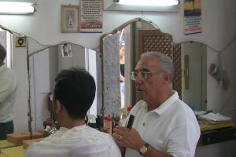

Cuidate del estilista
“No le preguntes al peluquero si cree que necesitas un corte de pelo” nos aconseja Chato, y la reflexión nace de alguna conversación con abogados de patentes. Bueno, es cierto que podemos considerar a muchos practicantes de la ley como la causa de la mayoría de lo males, pero no hay que perderse tampoco.
Aunque Carlos escribió un bonito post, las ideas que desliza peligrosas.
“El profesor no tiene la cabeza en enseñar, porque el doctor no sale de su casa para sanar.” cantaba Jorge González en los 1980s. Los gobiernos les preguntan a los gremios de profesores cuál es la mejor forma de mejorar la educación. Los gremios de profesores responden que subirles los sueldos es una excelente medida, pero que evaluar a los profesores y exigirles excelencia sería desastroso para los alumnos. Que existan las asociaciones gremiales no es el problema. El problema es que no se puede asumir que velarán por el bien común, porque sólo velan por los intereses de los suyos.
A los médicos y más todavía a la industria farmacéutica se les ha acusado de lo mismo. A muchos, simple y llanamente les interesa que sigamos yendo al médico y comprando medicamentos. No siempre los medicamentos se venden sólo bajo receta médica por un asunto de salud pública. A veces, es porque a algunos les conviene que necesitemos ir al médico para sanarnos, que no podamos valernos por nosotros mismos. Los científicos y los artistas tampoco han escapado de la misma acusación: que no necesitan un entorno libre de presiones porque su búsqueda del conocimiento y la belleza lo requiera, sino simplemente porque cualquiera querría tener todo el tiempo del mundo para mirarse el ombligo."
(las negritas son mías)
Cuesta no estar de acuerdo con estos argumentos, pero son peligrosos, porque son este tipo de argumentos son los que merman el poder de los sindicatos, minan la representatividad de las instituciones gremiales, impiden el debate democrático, en definitiva dañan el tejido social. Se quedan en el accidente, y no van a la esencia de los problemas. Además porque son caricaturas, y razonar a partir de caricaturas nos lleva a soluciones ingenuas, casi infantiles.
Pero lo otro que me molesta del artículo de Carlos esa mezcla de soberbia e ingenuidad:
“Por esto, por todo esto, lo que la gente que promueve el software libre ha hecho es tan importante. Se trata de un grupo de personas con una profesión muy lucrativa, que ha decidido revelar un gran secreto de su profesión. Ese secreto es que aún cuando hay poco o nada de dinero de por medio, seguirá habiendo software. Porque programar es una compulsión, porque es extremadamente satisfactorio hacerlo, y porque hay un desbalance extraordinario y maravilloso entre el tiempo que toma escribir un programa y el impacto que uno puede tener si millones de personas lo utilizan.”
La cantidad imágenes que se me vienen cuando leo este tipo de cosas van desde monjas rescatando prostitutas en el Barrio Rojo de Amsterdam, a jóvenes ecologistas, instalados en un remoto poblado del Africa Subsahariana, enseñándoles a usar ampolletas de bajo consumo a los niños.
La verdad es que no sé si deba decirle a algunos jóvenes programadores que conozco que, como están ejerciendo una profesión tan lucrativa, lo correcto sería que donen su tiempo a un proyecto opensource, el que después será usado por la misma empresa que los contrata, para no pagar licencias, ni contratos de mantención. No me da para tanto.
Además, díganme que no hay soberbia en afirmar lo buenos que somos los programadores porque le hemos mostrado al mundo el camino(*):
Una vez que este secreto es revelado, lo que queda para el resto de la sociedad no es ignorar lo que ha escuchado, sino aprovecharlo. Y para que vean que no hay truco detrás, el software libre no solamente es libre, su código es abierto y se provee bajo un acuerdo legal que entrega todas las garantías posibles. Obviamente hay personas en mi profesión que preferirían que las cosas fueran de otra manera, pero hay suficiente masa crítica como para que existan tantas renuncias voluntarias a nuestros derechos monopólicos de gremio como sean necesarias. Tal vez algún día otras profesiones hagan lo mismo.
(otra vez las negritas las puse yo)
(Parece que Chato no ha leido esa parte que dice “This program is distributed in the hope that it will be useful, but WITHOUT ANY WARRANTY” (GPL v3) " parece ;)
Basta. No seamos ingenuos, porque además, finalmente, ¿a quien beneficia este tipo de ideas de la cultura libre?, a los *Cloud Computing Lords, diría Jaron Lanier, como Google, como Yahoo.
¿Qué mayor beneficio para una empresa que vive de la información que toda la información sea libre, abierta, accesible? Porque es mejor para el modelo de negocios (que reduce todo a vender publicidad (**)). ¿Y quién le exige la retribución a estas empresas? ¿Donde está el código fuente de sus algoritmos esenciales, del core de sus negocios? No, esos está escondido a buen resguardo en la nube. Y para embolinar la perdiz, liberan lo que ya se ha convertido en commodities, total para eso tenemos genios inventando para nosotros, felices trabajando 20 horas diarias, comiendo dulces y bebidas gaseosas.
Las ideas tienen valor cuando son secretas, eso lo saben muy bien los que pagan esos sueldos lucrativos a estas mentes brillantes, pero ingenuas, que gastan su tiempo alimentando estas ideas quiméricas de libertad. Pero, además, el código fuente no importa, porque ya no tiene valor, así que da lo mismo que se entregue, regale, reparta, do whatever you want with it.
Yo le voy a seguir preguntando a mi peluquero si necesito cortarme el pelo, porque me cae bien, y necesita trabajo, los que no me gustan son esos estilistas que trabajan en esas cadenas internacionales de fashion style, que me vienen a decir lo que necesitamos.

(*) Sí, los programadores somos muy soberbios, lo sé, lo sé, no moleste.
(**) Por cierto, este post se llenará de avisos de clases de maquillaje, peluquería y estilo, pueden aprovechar de hacerse algún retoque.